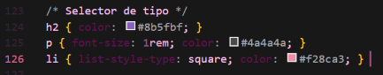
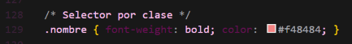
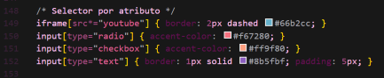

Selector de hijos directos
Permite estilizar solo los elementos que son hijos inmediatos de otro elemento, distinguiéndolos de los nietos u otros descendientes.

Se utiliza para seleccionar todos los elementos de una página web, aplicando estilos a todos ellos simultáneamente.
Selecciona y estiliza todos los elementos HTML de un tipo específico, simplemente usando el nombre de esa etiqueta HTML.
Es una forma de apuntar a un elemento HTML específico y único dentro de una página web, utilizando su atributo id.
Sirve para aplicar el mismo estilo a múltiples elementos, incluso de diferentes tipos, promoviendo la reutilización de estilos y la organización del código.
Permite aplicar estilos a elementos HTML basándose en la presencia o en el valor específico de sus atributos.
Forma de aplicar un mismo estilo a varios elementos diferentes a la vez, separando los selectores individuales con comas.
Permite seleccionar un elemento (o varios) que se encuentra dentro de otro elemento, sin importar cuán profunda sea la relación de descendencia o anidación.
Permite estilizar solo los elementos que son hijos inmediatos de otro elemento, distinguiéndolos de los nietos u otros descendientes.
Aplica estilos al elemento que sigue inmediatamente a otro elemento especificado y que comparten el mismo elemento padre.

Selecciona todos los elementos hermanos de un elemento específico, que son hijos del mismo padre y aparecen después de ese elemento en el código HTML, sin importar si están o no inmediatamente adyacentes.